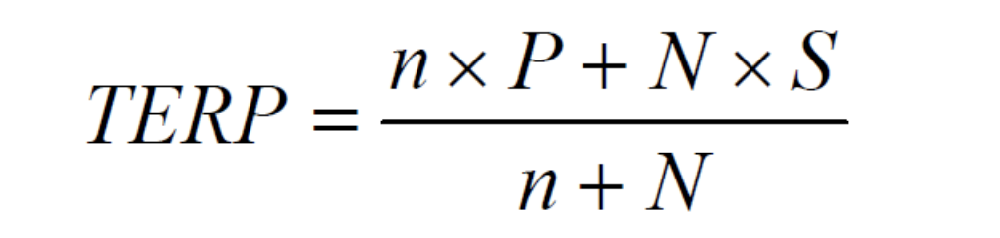

Case of SEO
Author: Adam Updated: 27/05/2019
In Bought Deals we have the involvement of an IB that buys shares from the issuer and after that sells the shares as quickly as possible to institutional investors. The IB buys the shares because it knows that it's going to be able to resell them in a few days. The IB takes the risk to buy at a certain price to hopefully resell at a higher price.
Profit for the bank is the difference between the selling price and acquiring price. The risk for the IB is to buy the issue without knowing exactly if there are enough institutional investors willing to pay a higher price.
Accelerated Book Building (ABB) are those transactions which occur in a very short period of time. In order to implement a traditional one during an IPO, you need minimum of a couple of weeks. However, if a company is already listed and wants to use an ABB, the process is likely to take only a couple of days. This is achieved through targeting a small group of institutional investors in order to implement a fast book building procedure to sell/allocate all the shares of the company sold in the SEO. Profits are represented by the gross-spread amount of fees paid to the advisor.
Right Issue: there is the right given to pre-existing shareholders to be offered to participate before than others to the SEOs (increase of capital). This right comes from the Napoleon Code and makes the process very long, and usually lasts between 3 and 6 months. On the day of the launch, shareholders receive are offered to participate to the seasoned offering. In proportion with the number of shares held by pre-existing shareholders before the increase of capital, it is given to them the right to buy new shares in order to maintain their participation in the company. During the meeting with shareholders, the issuer with the support of the advisor offer them a discounted price at which they can participate at the increase of capital the they of the execution in the Market that usually happens within 2 months from the shareholder meeting.
1. SEO Calculation: Right issue
The value of 1 share post-issue is going to be the average of the value of the old and new shares and it is called Theoretical Ex-Right Price (TERP).

where,
- n = number of outstanding shares
- N = number of newly issued shares
- P = current market price
- S = issue price
Because the day of the execution in the market the old share butterflies itself in two different instruments, it is possible to calculate the value of one right as the difference between the market price (before the execution) and the price of the share ex-right:
Right = Current Market Price - TERP
If the price of the shares once the issue is made goes below the TERP and the option is above the current market price, it's bad because shareholders won't exercise the right. In this case, the value of the right becomes 0. The issuer is going to sell 0 shares to pre-existing shareholders and all unsold rights are called RUMP.
RUMP = number of unsold shares at the end of the sub. period that have to be bought back by underwriters
Focus on the execution process of a right issue. An Italian leading insurer wants to raise €450 million of new capital in a right issue. The company has 120 million of shares outstanding that are currently trading at €6.5. If if the subscription price is set equal to €5.
- TERP = (120 x 6.5 + 90 x 5)/(120 + 90)= 5,857142857.
- Value of 1 right = P - Terp = 6,5 - 5,85= 0,64.
2. Unicredit Goes SEO: Right issue
UniCredit S.p.A. chose fully underwritten rights issue by way of an ordinary capital increase with subscription rights to UniCredit ordinary shareholders. It aimed to raise €13.0bn through the issuance of 1,607m new ordinary shares with 13 new shares for every 5 existing ordinary share held, at €8.09 per share.